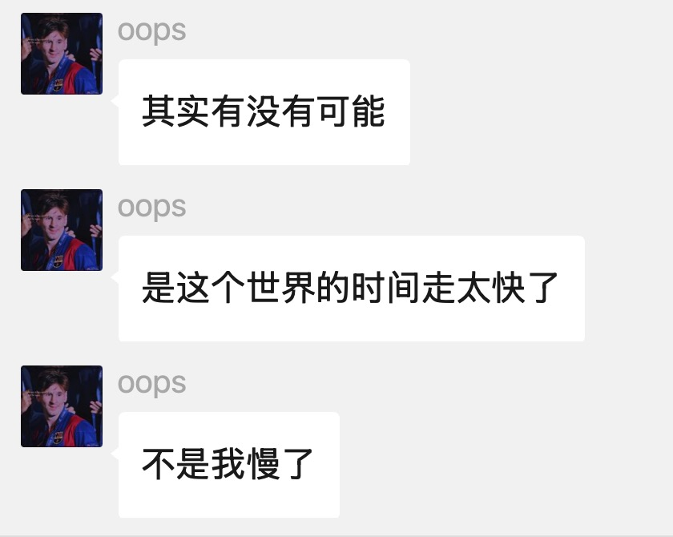

章程
约七点见面，我七点到了，他七点才开始进入“准备出门”的心理建设阶段。
中国标准时间减一小时。专为迟到大王、缓冲型人格、以及所有“马上到”的经典时刻校准。
“包的兄弟马上到”
“来了来了”
“怎么可能迟到”
“已经在路上了”

来自受害者视角的准时性批评，样本真实，情绪稳定。
约七点见面，我七点到了，他七点才开始进入“准备出门”的心理建设阶段。
他说“马上到”的时候，我一般会先去买杯喝的，因为这个马上通常还有一整集电视剧那么长。
何苇杭不是迟到，他是把所有人的时间都同步到了自己的标准时。
来南山吃饭我得提前出门坐一小时多地铁，但我不是最后一个到的。